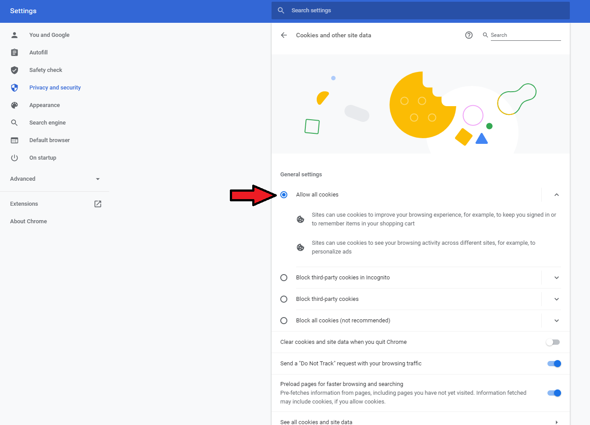
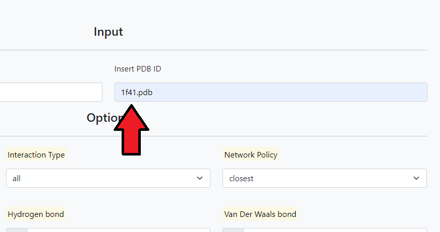
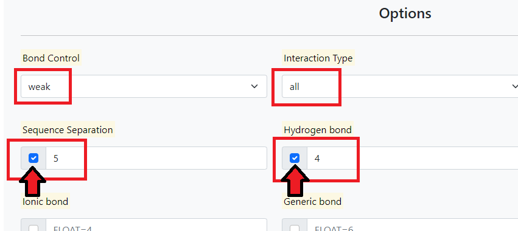
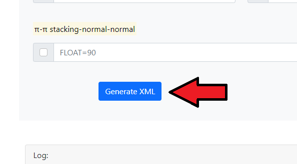
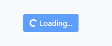
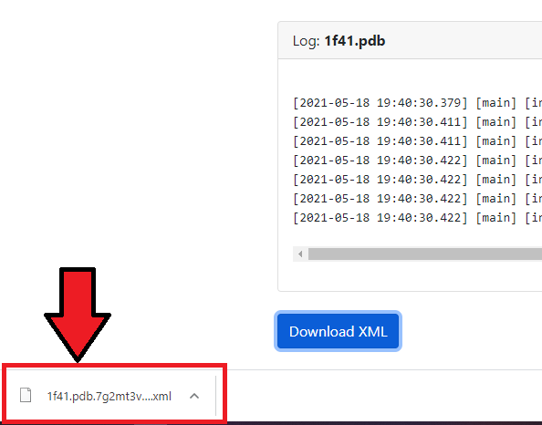
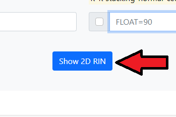
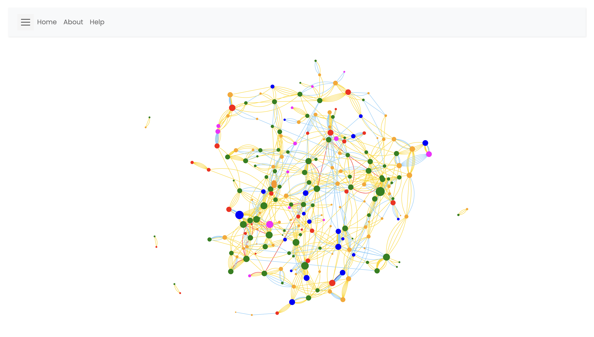
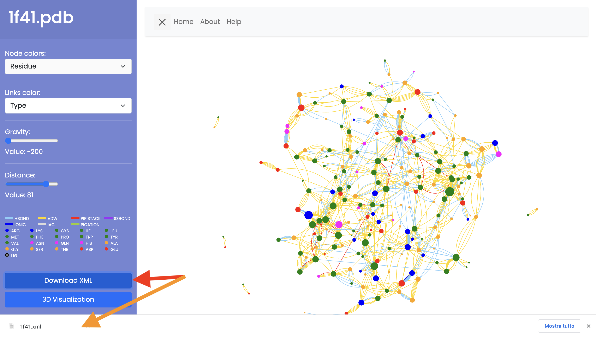
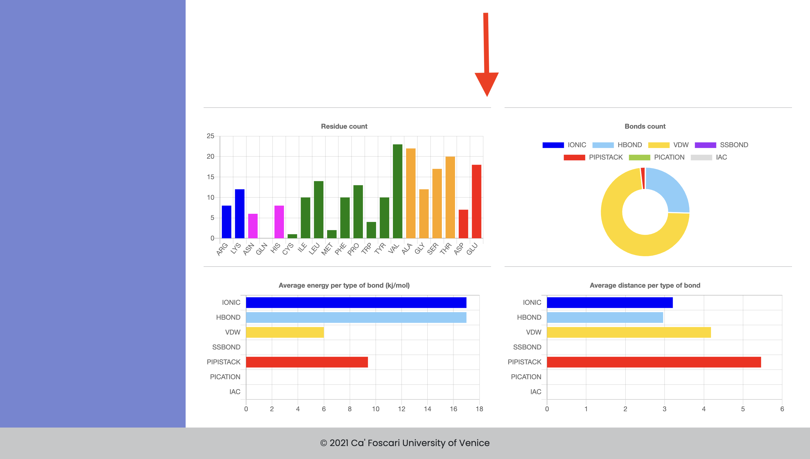

RINmaker
On this page you will find information regarding the platform only. Technical features will be shown, such as errors, storage systems used and best practices to use the platform properly.
For information about RIN and the RINmaker project visit the About page.
Usage
On the Home page you can choose between loading a pdb or entering the id.
Once you have chosen the input method, go to the Options section where you can specify the parameters. The parameters must respect some constraints, which you will find in the next section.
Once you have entered the parameters you can choose between the following three options:
- Generate XML, the pdb file will be passed to RINmaker which will produce an xml file that can be downloaded and log information.
- Show 2D RIN, the pdb file will be passed to RINmaker which will produce a 2-dimensional graph representing all types of non-covalent interactions in the PDB.
- Show 3D RIN, the same as the previous point but a 3-dimensional graph will be produced.
Parameters
The type and default value of the parameters are shown below:
| --seq-sep UINT=3 | sequence separation | |
| --bond-control TEXT=strict | strict or weak | |
| --interaction-type TEXT=all | all, multiple, one | |
| --net-policy TEXT=closest | closest, Ca or Cb | |
| --h-bond FLOAT=3.5 | maximum distance for h bonds | |
| --vdw-bond FLOAT=0.5 | maximum distance for vdw bonds | |
| --ionic-bond FLOAT=4 | maximum distance for ionic bonds | |
| --generic-bond FLOAT=6 | maximum distance for generic bonds | |
| --pication-bond FLOAT=5 | maximum distance for pication bonds | |
| --pipistack-bond FLOAT=6.5 | maximum distance for pipistack bonds | |
| --h-bond-angle FLOAT=63 | angle for h bonds | |
| --pication-angle FLOAT=45 | angle for pication bonds | |
| --pipistack-normal-normal FLOAT=90 | angle range from normal to normal for pipistack bonds | |
| --pipistack-normal-centre FLOAT=90 | angle range from normal to centre for pipistack bonds |
For more information visit the About page.
Technical information
This platform has been tested on:
- Google Chrome (Windows, OS X El Capitan) 90.0.4430.212 - 2021-05-10
- Opera (Windows) 76.0.4017.123 - 2021-05-14
- Firefox (Windows, Ubuntu 20.10) 88.0.1 - 2021-05-05
- Microsoft Edge (Windows) 90.0.818.62 - 2021-05-13
The platform has also been tested on Safari, but does not work properly.
Cookies are used to pass information and parameters to RINmaker and between the various pages.
So, for proper operation, please check that your browser accepts cookies from this domain. In most cases this is not necessary, but this may be the solution if the "Bad Request" error occurs. Another solution could be to clear the browser’s cache and cookies and try again
Below an example in Chrome:
Example
-
An example of "Generate XML" with a pdb id:
Enter pdb id in the box, the pdb will be taken from an online repository and the content used later.

After that, we choose the parameters to set. It is important to check the parameter you want to set.

Finally we click on the "Generate XML" button and wait for completion.
 
Once completed we scroll down where we will see the log information and a button to download the XML file generated by RINmaker.

Click on "Download XML"
 -
A 2D display example:
After entering the prameters that interest us, click on "Show 2D RIN".

Wait for completion.
Once completed we will see the following screen:

First the name of the pdb that we are viewing is displayed.
We can interact with the graph displayed using the mouse, acting directly on the graph, or through the bar between the graph and the logs.
To view the graph entirely, just click on the X at the top left.

To download the XML file of the displayed graph click on "Download XML" at the bottom of the sidebar.

Scrolling down it is possible to observe some statistics relating to the graph.
